06 — SPROUTING GARDEN
"Can we build without displacing life?"
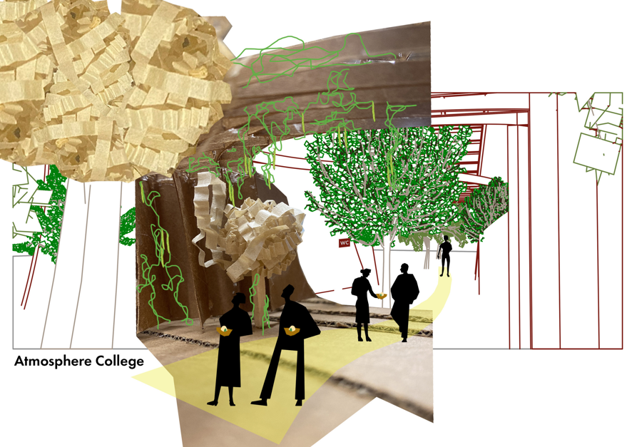
The user is not only human.
Architecture that recognizes trees, soil, climbing legumes, and seasonal organisms as equal inhabitants of the public realm.
How to settle down without chopping the trees down?
The timber waffle envelope curves organically around existing canopies, preserving every single trunk and root bed in the park.
Hide everything, but don't hide anything.
Services (kitchen storage, preparation, public restroom) do not form intrusive opaque volumes; they dissolve directly into the structural geometry.
This project is situated in a public park right beside the historical Kuzguncuk Bostanı in Üsküdar, Istanbul. Its primary objective is to forge a shared-use community pavilion dedicated to cultivating, preparing, and serving a specialty culinary dish crafted from native bean varieties specifically adapted to Kuzguncuk’s microclimate.
Designed to weave gracefully into the park without severing the historical foot-traffic between the upper and lower street frontages, the pavilion is constructed entirely of wood with an open, perforated waffle structure. This porous skin provides climbing beans with an organic trellis while honoring the height and spread of mature park trees.
The communal kitchen borrows its geometric rhythm directly from the structural ribs, embedding cooktops, drying racks, prep counters, and seed archives into a continuous sequence. Similarly, the public restrooms are woven into the thickest curve of the waffle envelope, serving civic needs without imposing an aggressive, out-of-place volume onto the serene green landscape.
Bu proje, İstanbul'un Üsküdar ilçesinde, tarihi Kuzguncuk Bostanı'na komşu bir park alanında yer almaktadır. Projenin ana konusu, Kuzguncuk Bostanı'nda yetişen ve bölgenin iklimine uygun yerel fasulye çeşitlerinden yapılan özel bir ritüel yemeğinin hazırlanması, pişirilmesi, servis edilmesi ve yetiştirilmesi süreçlerini destekleyen ortak bir kamusal yapı tasarlamaktır.
Yapı, parkın mevcut dokusunu ve iki sokak arasındaki yaya geçirgenliğini koparmamak adına ahşaptan, boşluklu bir waffle (kaset) strüktür olarak kurgulanmıştır. Bu açık ve gözenekli yapı hem fasulye sarmaşıklarının tırmanarak yaşayabileceği dikey bir yaşam alanı sunar hem de alandaki mevcut ağaçların gövdelerine ve taçlarına saygı duyarak etraflarından kıvrılır.
Mutfak alanı, yapının taşıyıcı kurgusundan şekil alarak pişirme, kurutma, servis ve depolama birimlerini tek bir dilde çözer. Tuvalet kütlesi de parkın ortasında yabancı bir kutu gibi durmak yerine strüktürün en yoğun kıvrımının içine gizlenerek doğal çevreye kusursuzca entegre olur.
"Sustainability is about understanding what we eat and where it comes from."
Germination & Soaking
Native bean seeds are hydrated in soaking basins integrated into the lower moisture-retaining ribs.
Sprouting & Waffle Vine Climbing
Young sprouts emerge and begin threading along the diagonal timber mesh, nurtured by sunlight filtered through the tree canopies.
Harvesting & Sun-Drying
Pod maturity allows communal harvesting directly from the walkable timber ramp. Extra beans are air-dried in specialized slatted niches.
Cooking Sprout Fries & Bean Mousse
Preparation of crisp sprout fries over built-in sunken stoves and serving the layered "Sprouting Plate" to passing pedestrians.
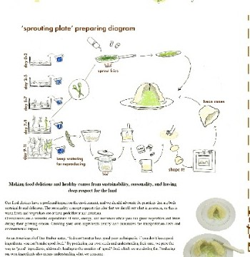
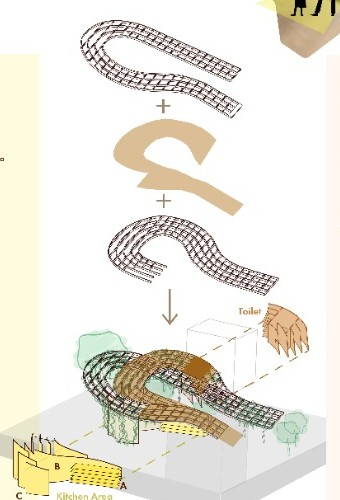
Upper Porous Waffle Canopy
An interlocking curved timber grid structure that filters direct southern sunlight, supports lush bean vines, and creates dynamic shadow play on the ground.
Topographical Walkway & Ramp Plate
A continuous gentle slope bridging the elevation change between the lower street (+18.00m) and upper residential street (+22.50m).
Sub-Structure Lattice & Ribbed Columns
Vertical wooden slats anchored to low-impact footings, deliberately shaped to weave around existing tree trunks without cutting roots.
Nested Functional Chambers
Zone A–B–C Kitchen: Prep counter, recessed stoves, and street-facing tasting ledge.
Camouflaged Restroom: Folded into the interior spine to avoid foreign visual volume in the public garden.
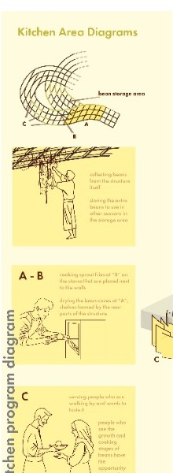
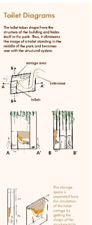
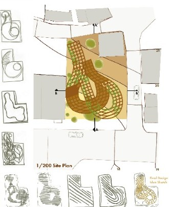
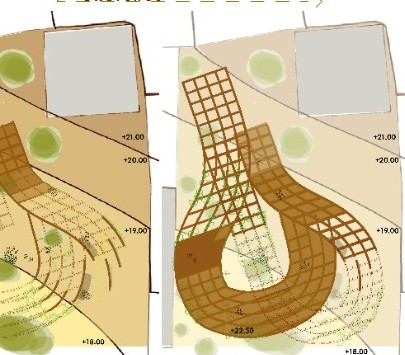
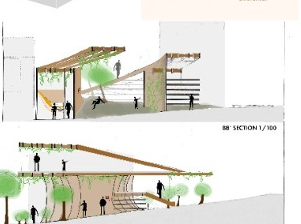
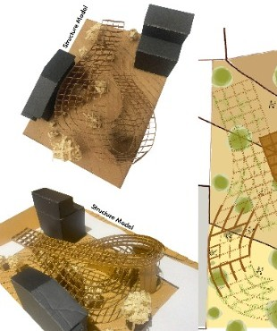
1/100 PHYSICAL TIMBER MOCKUPS
Constructed with laser-cut basswood waffle ribs and contextual massing blocks to evaluate organic shadows and vine climbing clearances.
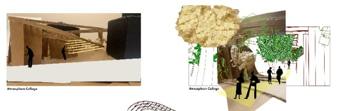
ATMOSPHERE & TACTILITY STUDIES
Exploring tactile material agencies using corrugated cardboard, shredded paper foliage, and natural daylight penetration.
High-resolution exhibition boards presented during the Final Review for Rituals of Otherworldly studio and selected for the MEF University Dean's Awards — 1st Year Category (Best Projects). Click either sheet to view the full presentation in high detail.
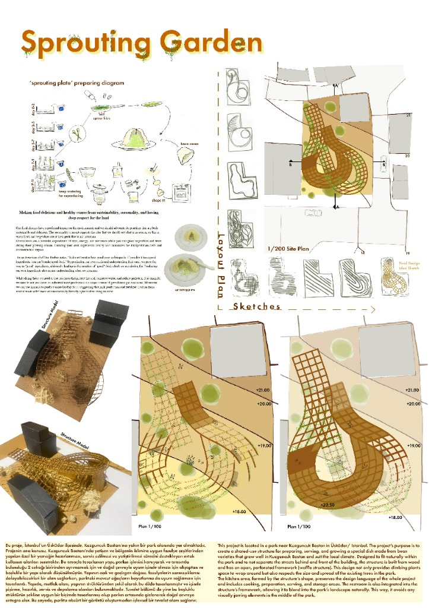
SHEET 01 • SITE & RITUALSHEET 01 — SITE, RITUAL & PLANS
Site plan 1/200, 11-day sprout cycle, +18.00/+22.50 floor plans, and model photographs.
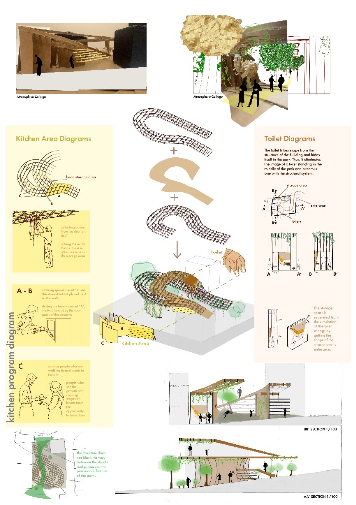
SHEET 02 • SECTIONS & AXOSHEET 02 — AXONOMETRIC & SECTIONS
Exploded timber structure, kitchen & toilet integration diagrams, and 1/100 architectural sections.
COMPLETE PROJECT SKETCHBOOK & BOOKLET
Includes site discovery, early conceptual iterations, tree-preservation sketches, and instructor review notes.